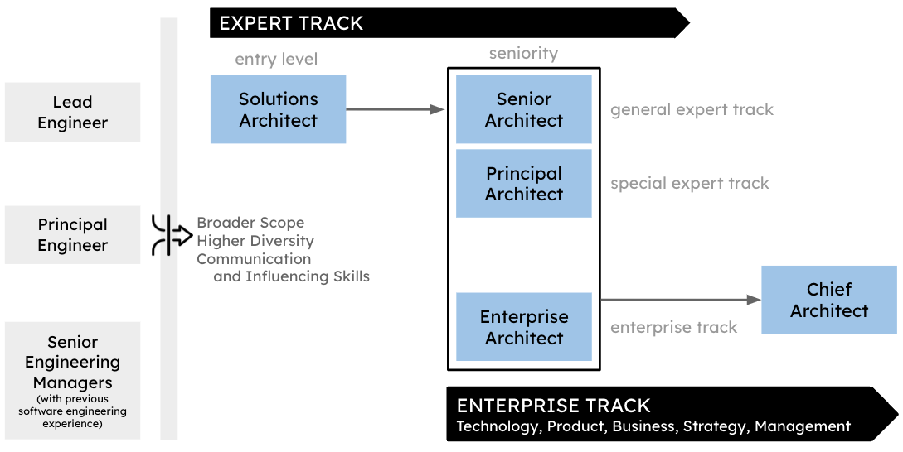
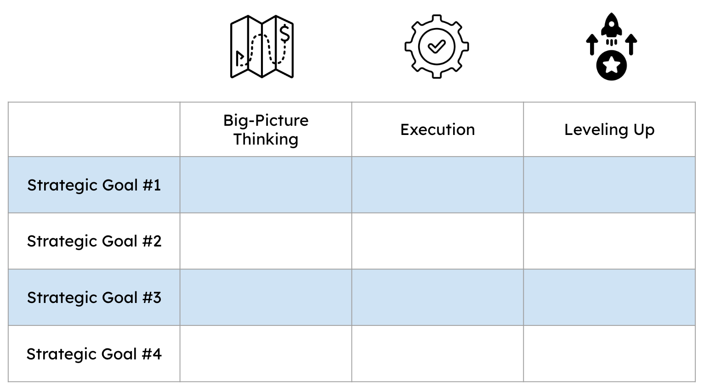
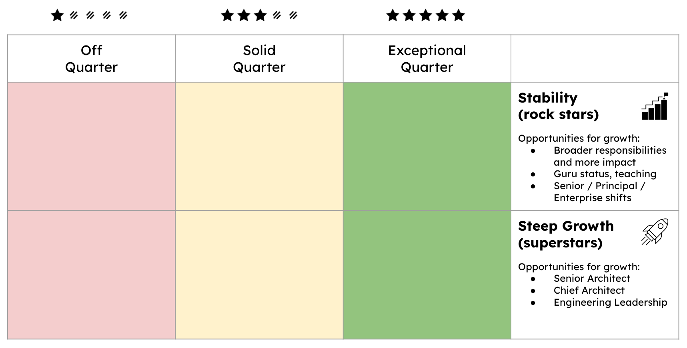

Architects' Career Paths: Raising the Bar
IN THIS SECTION, YOU WILL: Get ideas and tips about developing architects’ career paths.
KEY POINTS:
- Architects’ career paths ideally stem from a strong engineering background.
- Hiring architects requires constantly raising the bar to ensure a strong and diverse team structure.
Hiring and developing architects will differ significantly per organization. Nevertheless, here I share some of the ideas and lessons learned.
My view of architecture has a strong engineering bias. Architects’ career paths ideally stem from a strong engineering background. While there may be exceptions, an architect without significant real-world exposure to software engineering challenges cannot obtain enough practical knowledge to make technology decisions and build relations with developer teams.
Typical Architect’s Career Paths
Regarding career progression, Figure 1 shows an example of architectural career paths in relation to engineering, which I used to define architectural career paths.
 Figure 1: An example of an IT architect career paths in relation to engineering.
Stepping from an engineering position to an architecture requires three changes:
- Getting a broader scope of work,
- Having a higher diversity of work, and
- Changing skills, as communication and influencer skills become crucial to success.
All architects are responsible for the direction, quality, and approach within some critical area. They must combine in-depth knowledge of technical constraints, user needs, and organization-level leadership.
After the role of an Architect, I usually envision three tracks of progression:
- Senior Architects, generalists with broader responsibilities who can dig deep into complex issues and identifies a suitable course of action. They often navigate from one critical area to another, guided by the organization’s direction.
- Principal Architects, senior architects with a particular focus on some area of strategic interest for an organization (e.g., data, distributed systems, frontend).
- Enterprise Architects, being closer to product, management, strategy, and business functions, frequently serving as senior engineering leaders’ right hand.
But an architect’s path can take many different directions and have many other names. More important than a formal title is a continuous search for staying relevant and making an impact.
Performance & Growth Management
I have frequently used the Radical Candor framework (a management philosophy developed by Kim Scott) to manage the performance and growth of IT architects, focusing on fostering an environment of honest communication and personal development. Here’s how we apply the fundamental principles that you could use as an inspiration for your processes.
Key Principles
Care Personally
- Build Relationships: Prioritize building strong relationships with each IT architect, understanding their motivations, career aspirations, and personal goals. This foundation of trust makes it easier to give and receive feedback.
- Support and Empathy: Ensure each team member feels valued and supported, showing genuine care for their well-being and professional growth.
Challenge Directly
- Honest Feedback: Provide clear, specific feedback on their performance, ensuring it is both direct and constructive. This feedback helps IT architects understand their strengths and areas for improvement without ambiguity.
- Timely Interventions: Address performance issues promptly as they arise, preventing small problems from escalating and ensuring continuous improvement.
Give Praise and Criticism
- Balanced Approach: Maintain a balance between praising good performance and providing constructive criticism. This approach ensures that IT architects feel recognized for their achievements while being aware of areas needing development.
- Actionable Feedback: Deliver specific and actionable criticism, giving clear guidance on how to improve and succeed.
Create a Feedback Culture
- Encourage Two-Way Feedback: Foster an environment where IT architects feel comfortable giving feedback to us and their peers, promoting openness and trust within the team.
- Regular Check-ins: Conduct regular one-on-one meetings to discuss performance, goals, and feedback, ensuring continuous communication and alignment.
Focus on Growth
- Development Plans: Use feedback to create personalized development plans for each IT architect, aligning their growth with the organization’s objectives and career aspirations.
- Continuous Learning: Encourage a culture of continuous learning, providing resources and opportunities for skill enhancement and professional growth.
Manage Performance Reviews
- Transparent Criteria: Ensure that performance reviews are based on transparent and fair criteria so IT architects understand how their performance is assessed.
- Consistency: Apply performance standards consistently across the team to maintain fairness and equity in evaluations.
The described framework aims to create a supportive environment that promotes growth, accountability, and high performance.
Performance Management
Performance targets need to be closely aligned with the organization’s strategic goals and should be articulated in terms of their impact (refer to the impact section for more details). These targets should encompass the following aspects (Figure 2):
-
Big-Picture Thinking: Ensuring that every target supports the organization’s overarching vision and long-term objectives. It involves understanding how individual contributions fit into the broader context and drive the organization forward.
-
Execution: Focusing on effectively implementing strategies and plans. Support efficient and timely achievement of tasks and projects.
-
Leveling Up: Encouraging continuous improvement and development, Enhancing skills, processes, and performance standards, and fostering a culture of growth and excellence within the organization.
 Figure 2: An example framework for defining goals of architects: aligned with ogranizationals strategic goals, mesured in terms of three pillars of impact (big-picture thinking, execution, and leveling up).
Growth Management
Another idea I borrow from Radical Candor is the recognition that employees have different career trajectories and aspirations in growth and performance. It divides these into two main categories: the steep growth trajectory (superstars) and the stable growth trajectory (rock stars, solid as a rock). People of both growth trajectories could have poor or exceptional performance (Figure 3).
 Figure 3: An example framework for measuring the performance of architects of different growth trajectories.
Here’s an overview of how views growth and performance for rock stars and superstar:
Stable Growth Trajectory (Rock Stars)
These employees excel in their current roles and derive satisfaction from achieving excellence in a stable, consistent manner. They prefer deepening their expertise and maintaining a high level of performance without necessarily seeking rapid promotion.
Growth Opportunities for Rock Stars:
- Enhanced Responsibilities: Taking on critical projects, mentoring others, and providing technical oversight.
- Expertise Development: Becoming subject matter experts, gaining a “guru” status, and engaging in teaching and coaching.
- Role Variability: Shifting between roles (e.g., Senior, Principal, Enterprise Architect) to change the scope of work and maintain engagement.
Performance Management of Rock Stars:
- Feedback: Offer constructive feedback that helps them refine their expertise and maintain high performance.
- Support: Provide opportunities for continuous learning, such as advanced training or involvement in specialized projects.
- Recognition: Value their deep expertise and stability, acknowledging their critical role in the team’s success.
Steep Growth Trajectory (Superstars)
These individuals are highly ambitious and driven, continuously seeking new challenges and responsibilities. They have a rapid professional development pace and are often on the path to leadership roles.
Growth Opportunities for Superstars:
- Career Advancement: Superstars often aim for significant promotions, such as moving from Architect to Senior Architect, Chief Architect, or even transitioning to roles like Director of Engineering or CTO.
- Skill Development: They focus on acquiring new skills, mastering advanced technologies, and improving leadership capabilities.
- Increased Responsibilities: Taking on more complex projects, leading teams, and contributing to strategic initiatives.
Performance Management of Superstars:
- Feedback: Provide challenging feedback that pushes them to grow while recognizing their achievements.
- Support: Offer opportunities for further education, mentorship, and exposure to high-stakes projects.
- Recognition: Acknowledge their contributions and potential for future leadership roles within the organization.
By applying these principles, we aimed to create an environment where employees feel supported and challenged, leading to higher engagement, better performance, and more effective personal and professional growth.
Career Conversations
Whenever I can, I incorporate Radical Candor career conversations with architects. While you need to find a way for your team and organization, for me, it helped organize architects’ careers. The Radical Candor framework proposes three career conversations: Life Story, Dreams, and Career Action Plan.
Understanding Motivations and Values - Life Story
The first step in the Radical Candor career conversations approach is understanding the motivations and values driving individuals. You can gain valuable insights by paying close attention to a person’s life story and asking about their significant pivots and transitions. Why did they make those choices? What did those transitions teach them about their preferences in their work?
Exploring Aspirations - Dreams
The second step is to understand where people aim to be at the peak of their careers. While some managers might doubt that younger workers know what they want to be when they grow up, everyone has dreams. It’s essential to help individuals make these dreams more tangible. Some managers might worry about asking employees to focus on a single vision too early in their careers.
However, these concerns should not prevent you from having Career Conversations. People and their dreams evolve, so regular Career Conversations are crucial. Just like seeking feedback from your team, these discussions are an ongoing practice.
Creating an Action Plan - Career Action Plan
With an understanding of both the past and future, you can now develop a relevant and thoughtful action plan with clear responsibilities and timelines.
While Career Conversations take time, I integrated them into my usual one-on-one meetings. These discussions often become some of the most enjoyable and productive interactions.
Hiring Architects
Developing and hiring architects requires constantly raising the bar to ensure a strong and diverse team structure. Having more architects does not necessarily leads to a better team. Having good alignment and diversity of perspectives is even more important for an architecture team than for other groups.
It is vital to take more active ownership of hiring architects. Due to the vast diversity of how different companies define the architect’s role, recruiters may need help understanding the role’s requirements.
While you will need to design your hiring process, the hiring process should ensure a solid evaluation of the candidates:
- Technical skills: An architect must possess a solid technical background in the relevant areas, such as software development, infrastructure, cloud computing, and security. The process can assess their expertise through technical questions, tests, or case studies.
- Communication and collaboration skills: Architects often work with stakeholders, including business leaders, developers, and project managers. Therefore, the process could evaluate the candidate’s ability to communicate effectively, work in a team, and manage stakeholders.
- Leadership and problem-solving abilities: As a senior team member, an architect should have strong leadership skills and the ability to solve complex problems. The process could assess the candidate’s experience leading teams, making critical decisions, and resolving technical challenges.
- Cultural fit: The process could also evaluate the candidate’s fit with the company’s culture, values, and mission. The cultural fit is vital to ensure the candidate shares the same vision and will likely thrive in the organization.
In terms of steps, I typically work with some version of the following process (after standard recruitment screening):
Step 1: Initial Screening Interview with Chief Architect
- Typical duration 60 min
- In this step, assessing the candidate’s overall fit for the role is crucial, determining whether they possess the necessary skills, experience, and qualifications.
- Overall, the initial screening aims to identify the most promising candidates who possess the necessary skills, experience, and fit for the role of a senior solutions architect and who should proceed to the next stage of the interview process.
- Extra focus on:
- Cultural fit
- Leadership and problem-solving abilities
Step 2: In-Depth Interview with Senior/Principle/Enterprise Architects
- Typical duration 90 min
- Extra focus on:
- Evaluating the candidate’s technical skills
- Assessing the candidate’s communication and collaboration skills
- Understanding the candidate’s leadership and problem-solving abilities
Step 3: In-Depth Interview with Architects and Senior Engineers
- Typical duration 90 min
- Preparation:
- A document describing a recent solution architecture of a candidate, providing the content for discussion and helping estimate the candidate’s written skills.
- (Optional) open-source code review of a candidate
- Extra focus on:
- Any topics identified during Step 2 as areas that needed to explore further.
For senior positions, I typically introduce an additional step of meeting senior leadership:
Step 4: Non-technical stakeholders evaluation
- Interview with Engineering Leaders
- Interview with Product and Business Function Leaders (e.g., CPO, CMO, CFO)
- Interview with a CTO
- Extra focus on:
- Leadership abilities
- Communication and collaboration skills
With the described steps, you can get a solid overview of all critical aspects of superglue architects. In particular, the involvement of people outside architecture or engineering is crucial to minimize risk related to a lack of interest and ability to engage with all relevant stakeholders.
To Probe Further
- General:
- Performance Reviews for Software Developers
by Gergely Orosz, May 2022. - A Software Engineering Culture Test by Gergely Orosz
- Performance Reviews for Software Developers
- For individual contributors:
- Performance Self Review Template and Example for Software Engineers
by Gergely Orosz - A Work Log Template for Software Engineers,
by Gergely Orosz - Get your work recognized: write a brag document
by Julia Evans
- Performance Self Review Template and Example for Software Engineers
- For managers:
- Performance Review Example and Template for Engineering Managers
by Gergely Orosz - Things I’ve learned transitioning from engineer to engineering manager
by Gergely Orosz
- Performance Review Example and Template for Engineering Managers
- Tools
Questions to Consider
- Reflect on career paths in architecture. How can an engineering background impact effectiveness of an architect?
- Reflect on your career progression in architecture. How can you continuously stay relevant and make an impact in your role?
- If you were involved in the hiring process for architects, how would you assess a candidate’s technical skills, communication and collaboration skills, leadership and problem-solving abilities, and cultural fit?
- What strategies would you implement to ensure you continuously raise the bar in developing and hiring architects in your organization?
- How could you demonstrate your communication and collaboration skills as an architect? Can you share an instance where these skills are crucial?
- How would you describe your leadership and problem-solving abilities? Can you share an example of how you’ve used these skills in your work?
- Reflect on the cultural fit between you and your organization. How do your values align with those of the company?
- What steps would you include in your hiring process for architects to ensure a solid evaluation of the candidates?
- How would you ensure diversity of perspectives within your architecture team, and is this important?
On Being Architect ← Impact |
On Soft Skills On Soft Skills: Introduction → |